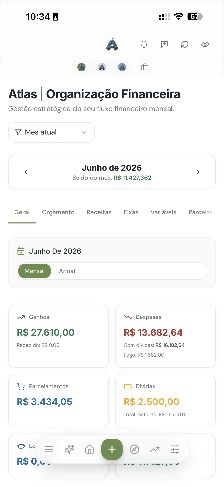

A fatura chega e o número é sempre maior do que você lembrava. Você paga, respira, e no mês seguinte acontece de novo. Se essa cena é familiar, o problema não é o cartão em si — é usar o cartão sem enxergar o que está acontecendo com ele ao longo do mês. A boa notícia: controlar o cartão de crédito é mais questão de método do que de força de vontade.
Este artigo faz parte do nosso guia de planejamento financeiro pessoal. Aqui o foco é uma ferramenta específica que, mal usada, derruba qualquer orçamento.
Por que o cartão engana tanta gente
Três características do cartão trabalham contra você. A primeira é o atraso entre gastar e pagar: o dinheiro só sai da conta semanas depois, então o cérebro não registra a compra como perda. A segunda é o limite, que muita gente trata como se fosse renda disponível — e não é. A terceira é o parcelamento, que transforma um gasto grande em vários pequenos e esconde o tamanho real do compromisso.
Junte as três e o resultado é conhecido: você gasta um pouco mais do que ganha todo mês, sem perceber, até que a fatura não fecha. E aí entra o rotativo.
Regra 1: o limite não é seu dinheiro
O banco define seu limite com base no que ele quer emprestar, não no que você pode pagar. Seu limite real é outro: o valor que você consegue quitar integralmente na data de vencimento sem apertar o resto do orçamento.
Uma referência prática é manter os gastos no cartão em até 30% da renda líquida. Com R$4.000 líquidos, isso dá R$1.200 de fatura. Se o banco liberou R$8.000, peça para reduzir para algo próximo do seu teto — a maioria dos apps permite fazer isso em um minuto. Limite alto só é útil para quem já tem controle; para quem está aprendendo, é uma tentação a mais.
Regra 2: acompanhe a fatura durante o mês, não no fim
Quem só olha a fatura quando ela fecha está sempre reagindo. O que funciona é saber quanto já está comprometido hoje, a qualquer momento do mês. Isso muda a decisão na hora da compra: "já usei R$900 dos R$1.200, esse tênis vai me deixar a R$1.250 — não cabe".
Na prática, dois hábitos resolvem: registrar o gasto no mesmo dia (ou usar um app que puxa automaticamente) e comparar toda semana o total acumulado com o seu teto. Cinco minutos por semana evitam a surpresa do fechamento.

Regra 3: parcela é dívida — e dívida se soma
"Sem juros" não significa "sem custo". Cada parcela é um pedaço do seu salário futuro que já tem dono. O problema raramente é uma compra parcelada; é a soma de dez compras pequenas que, juntas, criam uma fatura fixa de R$600 pelos próximos oito meses.
Antes de parcelar, faça duas perguntas:
- Quanto já tenho de parcelas comprometidas nos próximos meses? Se você não sabe responder, esse é o primeiro sinal de alerta.
- Eu compraria isso à vista se tivesse o dinheiro? Se a resposta é não, o parcelamento está só disfarçando um gasto que você não faria.
Um teto útil: as parcelas somadas não devem passar de um terço do seu limite pessoal (aquele da Regra 1). Assim sobra espaço para os gastos normais do mês sem estourar.
Truque simples: trate a parcela como um gasto fixo, igual ao aluguel. Coloque no orçamento do mês seguinte antes mesmo de a fatura chegar. Quem faz isso nunca é pego de surpresa.
Regra 4: nunca pague o mínimo
Pagar o mínimo da fatura ativa o crédito rotativo, que é o mais caro que existe no Brasil — os juros passam facilmente de 400% ao ano. Uma fatura de R$2.000 que você vai empurrando pode virar R$4.000 em pouco mais de um ano sem que você tenha comprado mais nada.
Se não dá para pagar tudo, a ordem de preferência é:
- Parcelar a fatura com o próprio banco. Os juros ainda são altos, mas bem menores que o rotativo, e o valor fica fixo.
- Trocar por um crédito mais barato — empréstimo pessoal ou consignado, se houver — e quitar a fatura inteira.
- Negociar diretamente com o banco. Faturas em atraso costumam ter descontos relevantes para quitação à vista.
Se você já está nessa situação, o artigo sobre como sair das dívidas detalha o passo a passo para organizar a saída.
Regra 5: um cartão só, com vencimento inteligente
Quanto mais cartões, mais difícil enxergar o total. Se você tem três ou quatro, escolha um e concentre tudo nele. Para os outros, ou cancele ou guarde longe — o importante é que não estejam na carteira.
Depois, ajuste o vencimento para poucos dias depois de receber o salário. Assim o dinheiro chega, a fatura é paga, e o que sobra é de fato o que você tem para o mês. Se o vencimento cai antes do pagamento, você vive um mês defasado — e essa defasagem é onde o rotativo nasce.
Quando o cartão passa a trabalhar a seu favor
Com as cinco regras funcionando, o cartão vira o que deveria ser: uma forma conveniente de pagar, com alguns benefícios reais. Você concentra os gastos em um lugar, tem tudo categorizado, ganha alguns dias de prazo e, dependendo do cartão, acumula pontos ou cashback. Mas isso só faz sentido para quem paga a fatura inteira todo mês. Qualquer benefício some no primeiro mês de rotativo.
Ainda não consegue controlar? Não tem problema em usar só o débito por dois ou três meses. Muita gente precisa "reaprender" a gastar com dinheiro que sai na hora antes de voltar ao crédito com regras.
Um plano para os próximos 30 dias
Para transformar isso em ação, sem sobrecarga:
- Hoje: defina seu limite pessoal (até 30% da renda líquida) e reduza o limite do banco se estiver muito acima.
- Esta semana: liste todas as parcelas em aberto e o mês em que cada uma acaba. Coloque esse total como gasto fixo no orçamento.
- Este mês: confira o acumulado da fatura toda semana. Se estiver perto do teto, o resto do mês é no débito.
- No fechamento: pague integral. Se não der, parcele com o banco — nunca o mínimo.
Depois de um ciclo assim, você já vai sentir a diferença. E quando o cartão estiver sob controle, sobra espaço para o próximo passo: parar de gastar por impulso e começar a guardar de verdade.
Perguntas frequentes
Qual limite de cartão de crédito é ideal?
O que você consegue pagar integralmente todo mês sem apertar o orçamento — em geral, até 30% da renda líquida. Se o banco oferece mais, peça para reduzir: limite alto não é renda extra.
Pagar o mínimo da fatura é uma boa saída?
Não. O mínimo ativa o rotativo, o crédito mais caro do mercado. Se não conseguir pagar tudo, parcele a fatura com o banco ou busque um crédito mais barato para quitá-la.
Vale a pena parcelar compras no cartão sem juros?
Só se o total das parcelas futuras já estiver no seu orçamento. O perigo não é a parcela isolada, é o acúmulo de várias compras que viram uma fatura fixa alta nos próximos meses.
Veja sua fatura antes de ela fechar
O Atlas categoriza os gastos do cartão e mostra quanto do seu orçamento já foi comprometido — sem surpresa no fim do mês.
Testar 7 dias grátis, sem cartãoContinue lendo: Como sair das dívidas · Como fazer um orçamento · Guia de planejamento financeiro
Walter Espíndola
CEO da Zephyr Investimentos, com mais de 10 anos no mercado financeiro gerindo cerca de R$100 milhões em ativos. Criou o Atlas para levar clareza financeira a qualquer pessoa.